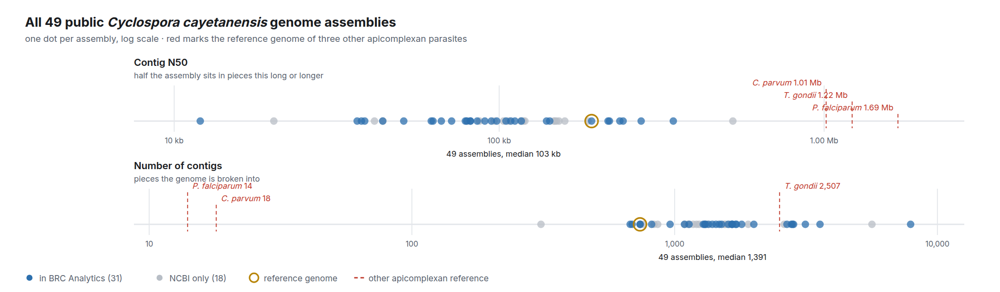
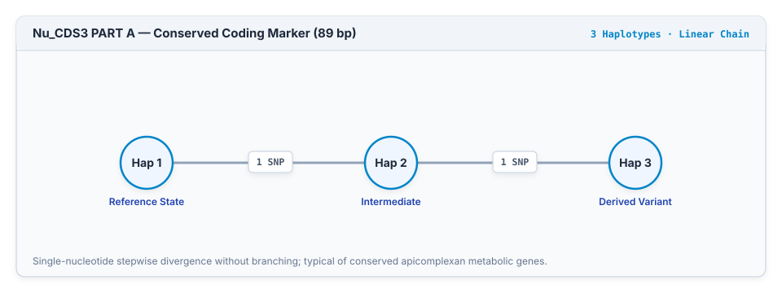
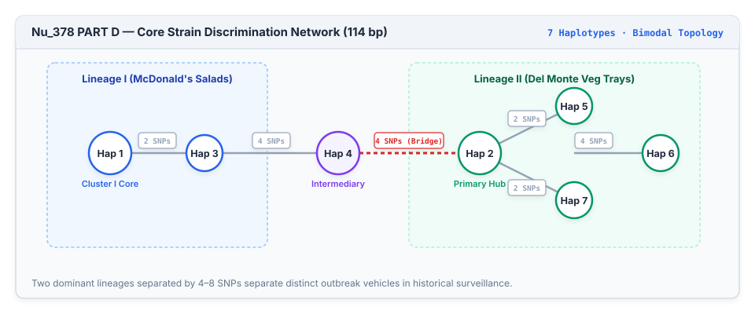
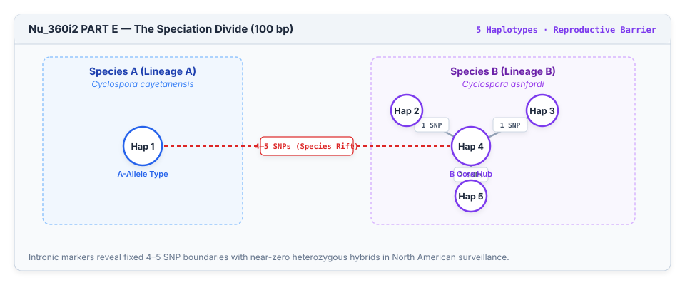
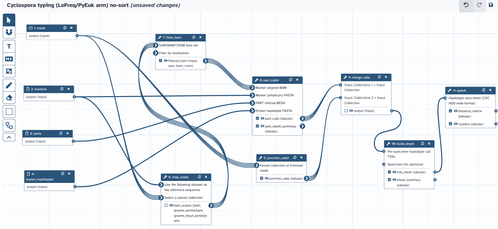

Genomic Analytics for Cyclospora Outbreaks
From raw amplicon reads to epidemiological clusters: reproducible workflows, empirical benchmarking, and open surveillance infrastructure.
The Ongoing 2026 Outbreak & The Public Data Gap
A historic surge in domestic cases highlights the critical need for open, verified genomic tools.
- Multi-state surge across 15+ states linked to commercial bagged salads and greens.
- High caseload requires molecular typing to separate concurrent contamination events.
- Zero raw FASTQ runs or haplotype sheets deposited in NCBI SRA/ENA archives.
- Prevents independent external re-analysis and algorithmic validation in real time.
- Workflows validated on confirmed 2018 gold-standard outbreak cohorts (PRJNA578931).
- Open Galaxy tools and containerized engines ready for public health lab deployment.
Why Cyclospora Cannot Be Sequenced Like Bacteria
Lack of culture models and extreme metagenomic dilution require targeted amplicon sequencing.
Surveils human cases via state health labs (PulseNet/SEDRIC); links multi-state patient clusters using the 8-marker amplicon panel.
Samples produce vehicles (lettuce, cilantro, berries) and agricultural water; coordinates farm inspections, import alerts, and product recalls.
Provides open, reproducible bioinformatics infrastructure (Galaxy), empirical benchmarks, and genome resources across UCSC & VEuPathDB.
No Reference-Grade Genome Exists
Forty-nine assemblies are public, none chromosome-level — which is why typing is done from amplicons rather than genomes.

Organellar Conservation vs. Nuclear Heterogeneity
High-copy organellar genomes lack diversity; polymorphic nuclear loci introduce multi-clonal mixtures.
- Core mitochondrial genomes across global clinical isolates contain only 9 to 12 SNPs (<0.1% sequence divergence).
- Identical sequence types appear in both domestic outbreaks and unrelated international travel cases, preventing source attribution.
- Multi-strain mixtures are the empirical default: 92.2% of 2018 outbreak cases (141 / 153) carry multi-allelic calls (\( \text{MOI} \ge 2 \)), and the CDC national surveillance cohort averages 26.1 distinct alleles per patient.
- Specimens cannot be directly aligned as single consensus sequences without discarding intra-host diversity, requiring methods that compare allele distributions or shared haplotype sets.
The 8-Marker MLST Strategy & Foundational Studies
Multi-Locus Sequence Typing (MLST) provides a proven targeted framework across fragmented eukaryotic pathogen genomes.
Multi-Locus Sequence Typing (MLST) is the standard molecular typing strategy for unculturable and polymorphic eukaryotic parasites (such as Plasmodium, Cryptosporidium, and Giardia), bypassing metagenomic dilution by targeting high-diversity loci.
49 C. cayetanensis draft assemblies exist in GenBank, with 31 available via UCSC Assembly Hubs and BRC-Analytics. Because genomes are fragmented (median 1,391 contigs, N50 103 kb, 0 chromosome-level), routine surveillance anchors on targeted amplicons.
Established the initial multi-locus amplicon typing scheme and the heuristic genetic distance framework for outbreak case linkage.
Mined 13 coding SNPs across four whole-genome draft assemblies to expand discriminatory resolution for epidemiological clustering.
Targeted tandem concatemers of 15-mer repeat motifs in the mitochondrial genome, resolving 14 distinct sequence types in clinical isolates.
The 8-Marker Genotyping Panel: Target Specifications
Six nuclear and two mitochondrial loci capture single nucleotide variants and tandem repeat arrays.
| Locus | Target / Gene Description | Amplicon Size | Calling Windows | SNPs | Population Diversity | Intra-Host Alleles |
|---|---|---|---|---|---|---|
| Nu_360i2 | Nuclear intronic region (speciation driver) | 488 bp | 6 PARTs (A–F, ~100 bp) | 20 | >30 haplotypes (Species A vs B split) | 1–3 |
| Nu_378 | Sec14 cytosolic factor-like protein | 473 bp | 4 PARTs (A–D, ~100 bp) | 16 | >25 haplotypes (Primary strain typing) | 1–3 |
| Nu_CDS1 | ATP synthase subunit (LOC34619420) | 175 bp | 2 PARTs (A: 67 bp, B: 68 bp) | 7 | 6–10 haplotypes | 1–2 |
| Nu_CDS2 | Hypothetical protein (LOC34617424) | 185 bp | 2 PARTs (A: 103 bp, B: 103 bp) | 4 | 4–6 haplotypes | 1–2 |
| Nu_CDS3 | Conserved hypothetical protein | 212 bp | 2 PARTs (A: 89 bp, B: 89 bp) | 2 | 3–4 haplotypes | 1–2 |
| Nu_CDS4 | ATP-dependent RNA helicase rrp3 | 179 bp | 2 PARTs (A: 69 bp, B: 69 bp) | 3 | 4–6 haplotypes | 1–2 |
| Mt_MSR | Mitochondrial 16S ribosomal RNA | 487 bp | 6 PARTs (A–F, ~100 bp) | 5 | 4–6 haplotypes (<0.1% divergence) | 1 |
| Mt-Junction | Mitochondrial linear repeat array | 184–214 bp | 1 Array (20 Cmt references) | Structural | 20 sequence types | 1 |
Conserved Coding Loci: Linear Stepwise Divergence
Conserved metabolic exons like Nu_CDS3 exhibit simple single-nucleotide mutational trajectories.

Strain Discrimination: Bimodal Hub-and-Spoke Networks
Nu_378 provides the core discriminatory power that resolves distinct clinical outbreak sources.

Cryptic Speciation: The Deep Intronic Divide
Nu_360i2 reveals fixed 4–5 SNP boundaries separating sympatric North American lineages.

The National Surveillance Standard: Role & Real-World Impact
The operational framework connecting clinical infections to contaminated produce.
- Provides objective genetic evidence to complement public health investigations.
- Assists in differentiating distinct contamination events during periods of high incidence.
- Supports data-driven public health actions to mitigate foodborne risks.
- Processes Illumina MiSeq FASTQ files across targeted marker amplicons.
- Generates a structured Haplotype Data Sheet (HDS) recording allelic profiles.
- Constructs transmission assessments to assist in epidemiological clustering.
The 2018 Outbreak Cohort: Epidemiological Context & Complexity
Two massive, concurrent multi-state outbreaks with overlapping geography, timelines, and vehicle ingredients.
- Vehicle: Fresh Express romaine lettuce and carrot mix served at fast-food restaurants.
- Geography: Concentrated across IL, IA, MO, KY, OH, and NE.
-
Genomic Signature: High frequency of
Nu_378_D_Hap_7(86.7%) andMt_Cmt199_Hap_17(63.3%).
- Vehicle: Del Monte pre-packaged trays (broccoli, cauliflower, carrots, and dill dip) sold in grocery stores.
- Geography: Concentrated across IA, WI, MN, and MI.
-
Genomic Signature: High frequency of
Nu_378_D_Hap_2(94.5%) andMt_Cmt169_Hap_8(74.5%).
- Spatiotemporal Overlap: Both outbreaks occurred concurrently in identical Midwestern states (May–July 2018).
- Ingredient Confounding: Both vehicles contained raw carrots; patients frequently reported multiple produce exposures or generic salad consumption.
- Ground-Truth Validation: Supplier invoices and restaurant receipts confirmed patient exposures, creating a definitive national benchmark for genotyping algorithms.
The Haplotype Data Sheet & Outbreak Clustering
How binary presence/absence matrices resolve clinical cases into distinct outbreak source clusters.
| Specimen ID | 378_D_H7 | 378_D_H2 | Cmt199_H17 | Cmt169_H8 | CDS1_B_H2 | CDS1_B_H1 |
|---|---|---|---|---|---|---|
| C_IA031_18 | X | · | · | · | · | · |
| C_IA034_18 | X | · | · | · | X | · |
| C_IA039_18 | X | · | X | · | · | · |
| C_IA013_18 | · | X | · | X | · | · |
| C_IA018_18 | · | X | · | X | · | X |
| C_WI008_18 | · | X | · | X | · | · |
Defined by Nu_378_D_Hap_7 (86.7% frequency) and Mt_Cmt199_Hap_17 (63.3%). Linked to Fresh Express salad mix across IL, IA, MO, KY.
Defined by Nu_378_D_Hap_2 (94.5% frequency) and Mt_Cmt169_Hap_8 (74.5%). Linked to Del Monte vegetable trays across IA, WI, MN, MI.
How the Pipeline Works: From Reads to Clusters
Three sequential computational stages translate raw sequencing data into actionable outbreak clusters.
Identify Haplotypes from Reads
Trims sequencing primers and assembles variable repeat regions from raw paired-end reads.
Clusters reads by sequence similarity and matches them against cataloged references to record detected alleles.
Compute Pairwise Distances
Compares every specimen against every other specimen across all shared marker regions.
Combines heuristic scoring with a probabilistic model that gives stronger weight to shared rare variants.
Group Related Outbreaks
Builds a hierarchical clustering tree that groups genetically identical or near-identical isolates.
Applies an empirical cutoff calibrated on historical outbreaks to define discrete epidemiological clusters.
Surveillance Output: The Clustering Tree & Outbreak Definitions
How pairwise genetic distances are translated into actionable public health clusters using hierarchical clustering.
| Specimen ID | Cluster Assignment | Epidemiological Source |
|---|---|---|
| CDC_2018_IL036 | Cluster 1 | McDonald's Salad (Vendor A) |
| CDC_2018_IL126 | Cluster 1 | McDonald's Salad (Vendor A) |
| CDC_2018_WI100 | Cluster 2 | Del Monte Veg Trays (Vendor B) |
| CDC_2018_WI008 | Cluster 2 | Del Monte Veg Trays (Vendor B) |
| CDC_2018_SP012 | Unassigned | Sporadic (Above Cutoff) |
- Cluster assignments group patient exposure questionnaires to pinpoint contaminated ingredients across state lines.
- Clear statistical separation between clusters enables independent agricultural recalls without misidentifying food suppliers.
The Established Typing Framework: Proven Impact & Opportunities for Growth
A pioneering national surveillance standard with clear opportunities to expand statistical sensitivity in complex data regimes.
- Established the first national molecular typing standard, operational across CDC and state public health laboratories since 2018.
- Successfully resolved major multi-state outbreaks (2018 salads, 2019 basil) to guide produce tracebacks and recalls.
- Provides robust classification for high-depth, single-clone infections matching the curated reference catalog.
- Polyclonal co-infections and low parasite depth encounter distance inflation under heuristic mismatch penalties.
- Novel single-nucleotide mutations are uncalled under rigid catalog-based string matching.
- Tied pairwise distances introduce run-to-run tree variance under random tie-breaking.
- Batch-dependent scaling can shift pairwise distances as surveillance databases grow across seasons.
Modernizing Surveillance: The BRC-Analytics Galaxy Platform
A modular, containerized, open-source workflow for automated public health surveillance.
- Provides an accessible, web-based Galaxy interface so public health scientists can run complete typing pipelines without command-line overhead.
- Replaces dictionary lock-in with standard BWA-MEM read mapping and LoFreq statistical variant calling.
- Automates batch scaling: processes 1 to 1,000+ specimens in parallel with zero manual interventions.
- Outputs standard CDC HDS matrices fully backwards-compatible with existing surveillance archives.
- Quantifies continuous intra-host variant frequencies (down to 5%), preventing low-abundance secondary strains from distorting pairwise distances.
- Guarantees end-to-end data provenance by recording all tool parameters, seeds, and container hashes.
Direct Comparison: Existing Pipeline vs. Modern Engine
Stage-by-stage architecture: comparing current operational practices with modernized statistical workflows.
Matches reads against a predefined catalog of reference alleles. Novel SNVs or low-depth loci remain uncalled, leaving missing markers and reducing usable cohort size.
Calculates distances using discrete mismatch penalties on co-infections (\( w = 1 + x \)). Single-threaded R execution completes in 370–655 seconds.
Hierarchical clustering breaks tied distances with random selection (ties.method = "random"); cutoffs are calibrated using known historical reference labels.
BWA-MEM + LoFreq statistical models detect both catalog alleles and novel variants down to 5% frequency, typing all 27 low-depth markers with 100% precision.
Inverse-variance allele weights (\( w_j = 1/\sqrt{p(1-p)} \)) quantify continuous allele sharing. Vectorized Numba engine executes in 1.56 seconds (>300× speedup).
Lexicographical tie-breaking ensures 100% deterministic trees. Dynamic relative-gap cut discovers natural clusters (\( k=2, \text{ARI}=0.9737 \)) without requiring answer keys.
How KING-wIBS Works: Population Weighting & Co-Infections
Weighting shared alleles by background rarity separates true outbreak clusters from population noise.
Borrowing from the KING kinship framework, markers are weighted inversely by their binomial standard deviation across the surveillance cohort:
Because 92.2% of patient isolates (141 / 153) carry multi-allelic mixtures (\( \text{MOI} \ge 2 \)), KING-wIBS evaluates continuous overlap without quadratic penalties:
- Measures continuous allele overlap across loci without adding artificial penalties for secondary background strains.
- Guarantees distances remain strictly bounded between 0 (identical) and 1 (fully distinct).
- Vectorized Numba kernel evaluates all 580,000 pairwise distances across a cohort in under 50 milliseconds.
Unsupervised Outbreak Detection: Dynamic Relative-Gap Tree Cutting
How PyEuk discovers the true number of outbreak clusters without requiring historical answer keys.
Within-outbreak cases merge at low heights (\( h \lt 0.04 \)), followed by an abrupt vertical jump (\( \Delta h \)) before merging with unrelated isolates.
- Evaluates the vertical height difference between consecutive dendrogram merges across all candidate cluster counts \( k \).
- Selects the partition at the global maximum relative gap, identifying the transition where distinct outbreaks separate.
- Successfully identifies the two-outbreak structure (\( k = 2, \text{ARI} = 0.9737 \)) in verified benchmark data.
- Supports automated surveillance by identifying outbreak boundaries without needing subjective manual threshold calibration.
Preventing Outbreak Data Loss: Rescuing Markers & Retaining Patients
How statistical variant calling and pairwise-complete metrics help maximize the use of clinical sequencing data.
- Low oocyst shedding in clinical stool extracts creates variable sequencing depth across the 8 amplicon loci.
- Rigid string-matching and strict depth cutoffs leave low-coverage loci uncalled (27 blank markers in the 2018 benchmark cohort).
- Complete-case filtering drops any specimen with even a single missing locus, resulting in 56% cohort attrition (67 / 153 cases kept).
- BWA-MEM read mapping and LoFreq statistical models recover all 27 uncalled markers with 100% precision.
- Sensitive calling expands nuclear locus coverage, providing complete allelic profiles across clinical stool samples.
- Pairwise-complete distance calculations retain 100% of clinical cases (153 / 153) without dropping partial profiles.
Benchmarking the Pipeline: Setup & Evaluation
A comparative approach to evaluate the performance of sequencing and clustering components on clinical data.
Evaluating an end-to-end pipeline often obscures individual component performance.
Our 4-arm matrix isolates variant calling from distance/clustering metrics to assess each component independently.
- Historical benchmarks were sometimes limited by incomplete cohort depositions and rigid filtering strategies.
- Strict coverage cutoffs caused marker dropouts across low-yield clinical extracts.
- These gaps reduced the number of patient isolates retained in final epidemiological tracebacks.
- BWA-MEM mapping and LoFreq calling recover missing marker data with 100% precision.
- Pairwise-complete distance calculations integrate all available sequence data points.
- Metric repair techniques support consistent clustering, enabling full cohort retention.
Benchmark Comparison: Conventional Methods vs. PyEuk
Evaluating supervised heuristics calibrated on known labels against PyEuk's fully unsupervised discovery engine.
- Arm 1 (Published Calls + PyEuk): Evaluates PyEuk's metric on CDC data (\( N = 153 \)). Discovers 2 core clusters (\( \text{ARI} = 0.9721 \)) with zero label guidance.
- Arm 2 (Legacy CDC Baseline): Retains only complete 8-locus profiles (\( N = 67 \)). Reaches \( \text{ARI} = 1.000 \) because distance cutoffs were calibrated a posteriori on known truth labels.
- Arm 3 (LoFreq Variant Calling + Legacy R): Rescues missing markers (\( N = 147 \)), but still depends on supervised calibration against outbreak keys.
- Arm 4 (Integrated PyEuk): Evaluates all \( N = 203 \) cases (100% retention). Fully unsupervised relative-gap cutting achieves \( \text{ARI} = 0.8894 \) with zero prior labels.
| Arm | Workflow Components | Cases (N) | Cluster ARI | Supervision / Calibration |
|---|---|---|---|---|
| Arm 1 | Existing Calls + PyEuk wIBS | 153 | 0.9721 | Unsupervised (0 Labels) |
| Arm 2 | Existing Calls + Legacy R | 67 | 1.0000 | Calibrated on Known Labels |
| Arm 3 | Raw Reads + Legacy R | 147 | 0.9975 | Calibrated on Known Labels |
| Arm 4 | Integrated PyEuk (Full Cohort) | 203 | 0.8894 | Unsupervised (0 Labels) |
Outbreak Resolution: Comprehensive Dendrogram & Markers
PyEuk retains the complete patient cohort, enabling clear separation of outbreak signatures.
The PyEuk workflow retains the full clinical cohort, providing clear partitioning of distinct transmission events.
Mt_Cmt199.A_Hap_17 (199 bp)
Mt_Cmt169.A_Hap_8 (169 bp)
Nu_378_PART_D_Hap_7 (94.5%)
Nu_378_PART_D_Hap_2 (100.0%)
CDS1/4: PART_A_Hap_2 / PART_B_Hap_2
CDS1/4: PART_A_Hap_1 / PART_B_Hap_1
Petabase-Scale Pathogen Search: LexicMap on Galaxy
Democratizing ultra-fast, petabyte-scale k-mer querying across global public sequence archives.
- Alignment-Free Petabase Indexing: Uses compressed lexicographical k-mer tables to query target sequences across millions of raw SRA/ENA runs in seconds without downloading petabytes of FASTQ files.
- Universal Pathogen Discovery: Instantly scans global repositories for any diagnostic gene, 28S rRNA marker, or viral sequence across eukaryotic parasites (Cyclospora, Babesia, T. cruzi).
- Heavy Resource Demands: Maintaining and traversing petabase graph indexes requires terabyte-scale RAM, high-speed NVMe scratch arrays, and massive multi-core compute—far beyond standard lab hardware.
- Shared Enterprise Infrastructure: Galaxy centrally hosts and synchronizes pre-computed petabyte sequence indexes on high-performance compute clusters.
- Zero Hardware Overhead: Public health epidemiologists run multi-terabyte LexicMap queries via an intuitive web interface or API without managing supercomputers.
- End-to-End Analysis: Automatically pipes discovered SRA accessions directly into downstream Galaxy tools (LoFreq, PyEuk) for seamless variant calling and phylogenetic placement.
Mining Public Archives: Uncovering "Invisible" Global Incursions
Querying 28S rRNA across global stool archives exposes undetected clinical cases in general surveillance cohorts.
Acute diarrheal gut metagenome (WGS, ~14.3M reads) from Dhaka cholera surveillance harboring unannotated Cyclospora DNA.
Metatranscriptome (~28.3M reads) from an unresolved clinical gastroenteritis case where standard diagnostic testing found no pathogen.
Metatranscriptome from a patient with confirmed Salmonella infection, revealing an unrecognized co-infection.
- Hidden Community Prevalence: Demonstrates that ~2 in 1,000 patients in routine UK gastroenteritis surveillance harbored Cyclospora that went undetected because panels only tested for bacteria and viruses.
- Co-Infection Dynamics: Highlights that bacterial positivity (e.g. Salmonella) frequently masks underlying parasitic infections in clinical settings.
- Metatranscriptomic Sensitivity: High cellular abundance of 28S ribosomal RNA makes total RNA-seq highly sensitive for digital screening even when genomic DNA is scarce.
From Shotgun Metagenomes to MLST: Empirical Allele Recovery
Validating diagnostic markers, single-strain MOI sampling, and geographic divergence from raw metagenomic reads.
Filtered mapping recovered 4 reads ($MAPQ = 60$, 100% full-length identity) yielding 5 unique sub-locus allele calls across the CDC reference panel:
Read 1338290 spans Pos 334–485 (151 bp, $E = 2\times 10^{-43}$), matching CDC outbreak haplotypes with 0 mismatches.
3 reads spanning Pos 35–686 ($E = 1\times 10^{-55}$). Overlapping reads 1360627 and 1360711 confirm 100% sequence identity.
- Monoclonal Sampling (Observed MOI = 1): Zero heterozygous sites across all called loci confirms that un-amplified shotgun WGS at low parasite depth (<0.6%) samples individual single parasite lineages.
-
Geographic Lineage Divergence:
Mt_MSR_PART_F_Hap_2clearly separates this South Asian isolate from North American domestic references (PART_F_Hap_1), while sharedNu_360i2alleles confirm conserved ancestral markers. - DNA MLST vs. RNA Schemes: UK metatranscriptomes yielded 28S rRNA hits in LexicMap but 0 reads at DNA amplicon loci—proving future surveillance must pair DNA MLST with 28S/18S ribosomal subtyping for RNA-seq.
Long-Read Sequencing: Phasing & Structural Resolution
Oxford Nanopore reads span multi-window loci and tandem repeats without statistical imputation.
-
Single reads span all 6 sub-windows of
Nu_360i2(610 bp) on one molecule. - Establishes true physical cis-linkage, eliminating statistical phasing errors across intronic regions.
-
Reads bridge flanking anchors and the entire 15-mer repeat interior (
Mt_Cmt). - Unambiguously distinguishes structural alleles (139 bp, 154 bp, 169 bp, 199 bp) that cause short-read clipping.
-
Contig N50 >500 kb resolves the complete 6.38 kb circular mitochondrial genome (
CM037477.1). - Zero intra-locus heterozygosity confirms single-clone (\( \text{MOI} = 1 \)) infections without deconvolution artifacts.
Long-Read Case Study: Phasing & Outbreak Placement
Typing a Canadian clinical isolate (Can-NML:CYC2020-001) and placing it into the US outbreak tree.
| Target | Contig | Called Haplotypes | Identity |
|---|---|---|---|
| Mt_MSR | Circular Mt | PART_A_H3 · B_H1 · C_H1 · D_H1 · E_H1 · F_H2 | 100% |
| Mt_Junction | Circular Mt | Mt_Cmt154.B_Junction_Hap_4 (154 bp repeat) | 100% |
| Nu_360i2 | Contig 46 | PART_A–F: all Haplotype 1 (phased cis-array) | 100% |
| Nu_378 | Contig 73 | PART_A_H2 · B_H1 · C_H1 · D_H3 | 100% |
| Nu_CDS1–4 | Nuclear | CDS1: A_H2/B_H2 · CDS2: A_H1/B_H1 · CDS3: A_H1/B_H1 · CDS4: A_H2/B_H2 | 100% |
-
Salad Mix Macro-Lineage: PyEuk placed the isolate into the Vendor A (Salad Mix) clade, closest to benchmark case
C_IL119_18(\( D = 0.0136 \)). -
Allelic Divergence: Distinguished from core 2018 cases by carrying the 154 bp junction (
Mt_Cmt154.B) instead of the dominant 139 bp variant. - Cross-Platform Typing: PyEuk seamlessly integrates long-read WGS, short-read amplicons, and metagenomes into a single distance matrix in <500 ms.
Software Architecture & Data Availability
All pipeline components are open-source, containerized, and tied to versioned reference datasets.
- Tool wrappers published in nekrut/brc-tools following standard IWC workflow specifications.
- Integrates BWA-MEM read alignment, LoFreq variant calling, HDS extraction, and PyEuk clustering into a continuous workflow.
- Executable via web browser UI, Galaxy API, or CLI runners on workstations, institutional HPC clusters, and cloud nodes.
- Single pinned container image containing Python 3.11, C-extensions, LoFreq, and BWA-MEM dependencies.
- Implements PyEuk v2.1.0 with vectorized Numba KING-wIBS kernels for high-speed distance computation (1.56s).
- Fixed dependency locking prevents runtime errors from environment drift or R package version conflicts.
- Permanent archive at 10.5281/zenodo.21924355.
-
Packages
markers.fa,parts.bed,haplotypes78.fa, andjunction.fawith SHA256 checksums. - Ensures exact data provenance and reproducible allele calling across labs and surveillance seasons.
The Workflow, As It Ships
Eleven steps in the Galaxy editor: four inputs, two callers running in parallel, one sheet, one clustering. Editable, versioned, and runnable by anyone with the link.

Summary: Modernizing Cyclospora Genomic Surveillance
Four core computational advancements supporting sensitive, deterministic, and reproducible outbreak surveillance.
Statistical calling rescues uncalled markers with 100% precision, while pairwise-complete metrics eliminate the legacy pipeline's 56% cohort attrition—ensuring every clinical case is retained in the investigation.
Replaces random coin-flip tie breaking with stable sorting and models co-infections with inverse-variance KING-wIBS weights—delivering reproducible tree topologies across independent runs.
Dynamic relative-gap tree cutting discovers true outbreak boundaries (k = 2, ARI = 0.9737) directly from the data on day one, eliminating reliance on pre-calibrated answer keys for emerging strains.
Vectorized Numba kernels evaluate 580,000 distances in 1.56 seconds (>300× faster than R). Packaged in pinned Apptainer/Docker containers with open Galaxy wrappers ready for routine public health lab deployment.